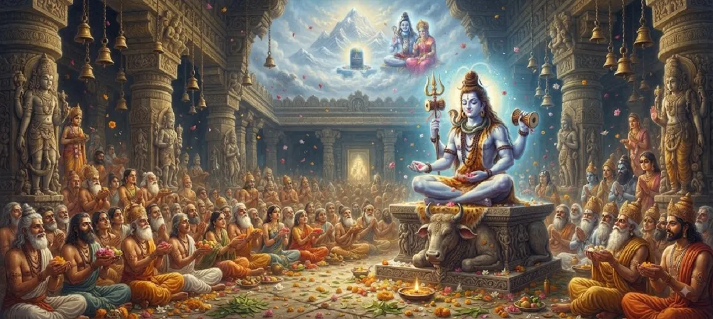

The Greatness of Nandikeshvara
The seventh chapter of the Kotirudra Samhita extols the extraordinary devotion, divine blessings, and supreme spiritual stature of Nandikeshvara (Nandi), the chief attendant and vehicle of Lord Shiva.
It details how Nandi's intense penance and unwavering surrender earned him eternal proximity to Mahadeva, making him an object of reverence for all seekers.
This chapter illuminates the ideal archetype of a true devotee whose very existence is merged in the glory of the Supreme Lord.
Chapter 7 Highlights
Chief of Ganas
Nandi holds supreme authority over all attendants in the divine court of Shiva.
Symbol of Righteousness
Representing Dharma with four pillars, Nandi embodies pure moral fortitude.
Unwavering Devotion
His absolute surrender stands as the ultimate benchmark for spiritual seekers.
Gateway to the Lord
Worshipping Nandi is a vital prerequisite to receiving Shiva's direct grace.
Divine Blessings
Nandi grants wisdom, strength, and protection to sincere devotees of Mahadeva.
Eternal Proximity
Blessed with immortality and divine form, Nandi forever resides beside Shiva.
Core Topics in This Chapter
The Divine Birth and Origin of Nandi
Chapter 7 recounts how Nandikeshvara manifested through the grace and blessings of Lord Shiva, endowed with extraordinary spiritual vigor from his very inception.
His birth was not ordinary; it was divinely orchestrated to fulfill sacred cosmic duties and to serve as the eternal pillar of righteousness.
Intense Penance and Blessings
The text describes the rigorous austerities performed by Nandi to please Mahadeva, demonstrating unmatched dedication and single-minded focus.
Impressed by his devotion, Lord Shiva appeared before him, embraced him, and granted him immortality, unmatched strength, and leadership over all Ganas.
Appointment as Chief of Ganas
Lord Shiva consecrated Nandi as the chief of His divine attendants (Gana-adhipati), granting him a divine form equal in radiance to Shiva Himself.
This monumental elevation placed Nandikeshvara at the very heart of celestial governance and divine administration.
Symbolic Representation of Dharma
The scriptures explain that Nandi represents Dharma (righteousness) resting on four pillars, embodying truth, purity, compassion, and charity.
As the sacred bull, he carries Lord Shiva and Goddess Parvati, symbolizing the vehicle of pure dharma supporting the divine cosmic order.
The Protocol of Worshipping Nandi
The chapter emphasizes that devotees must pay homage to Nandikeshvara before entering the inner sanctum to worship the Shiva Linga.
By whispering prayers into Nandi's ear or touching his feet with reverence, a seeker's petitions are directly conveyed to Mahadeva.
The Supreme Glory and Wisdom of Nandikeshvara
Nandikeshvara is not only powerful but is also an embodiment of supreme wisdom, well-versed in all sacred sciences and spiritual truths.
His teachings and presence inspire spiritual aspirants to cultivate unwavering devotion and surrender to the Supreme Lord.
Transition to Chapter 8
Having celebrated the exalted status and greatness of Nandi, the narrative smoothly transitions to Chapter 8, which unfolds the sacred origin of the Somnath Jyotirlinga.
Readers are thus guided further into the glorious manifestations of Lord Shiva across the sacred geography of Bharat.
Key Teachings of Chapter 7
Fruits of Surrender
Complete surrender to Shiva elevates a devotee to cosmic leadership.
Dharma Personified
Nandi stands as the eternal upholder of truth, morality, and righteousness.
Gateway to Grace
Reverence to Nandi is essential for unlocking the blessings of Mahadeva.
Divine Proximity
Unwavering devotion grants eternal companionship with the Supreme Lord.
Supreme Wisdom
Nandikeshvara radiates spiritual knowledge and protection to all seekers.
Eternal Glory
His story inspires generations of devotees to walk the path of pure bhakti.
Spiritual Reflection
The greatness of Nandikeshvara teaches us that true greatness in the spiritual realm is born from humility, intense penance, and absolute devotion. By honoring Nandi, we acknowledge the vital role of righteousness and surrender in our journey toward Lord Shiva, ensuring our prayers reach the divine throne with his loving intercession.
Living the Message of Chapter 7
Cultivate humility and unwavering loyalty in your spiritual practice, mirroring the steadfast devotion of Nandi toward Mahadeva.
Uphold righteousness (dharma) in your daily life, making truth and compassion the foundational pillars of your actions.
Remember to offer your respects to Nandikeshvara whenever you visit a Shiva temple, seeking his grace to deepen your connection with the Lord.
Key Spiritual Concepts
The chief attendant, vehicle, and foremost devotee of Lord Shiva.
The title of commander and leader over all divine attendants of Shiva.
Righteousness, truth, and moral order embodied by Nandi.
Intense spiritual penance and austerity performed to attain divine grace.
Absolute, unwavering devotion and surrender to the Supreme Lord.
Divine blessing and grace bestowed upon the devoted seeker.
Chapter Summary
Kotirudra Samhita Chapter 7 chronicles the divine origin, intense penance, and supreme exaltation of Nandikeshvara. Elevated by Lord Shiva as the chief of His attendants and the living symbol of Dharma, Nandi represents the pinnacle of unwavering devotion and surrender. The chapter outlines the sacred protocol of worshipping Nandi as a gateway to Shiva's grace, seamlessly preparing the reader for the exploration of the Somnath Jyotirlinga in Chapter 8.
Frequently Asked Questions
1. What is the main subject of Kotirudra Samhita Chapter 7?
Chapter 7 details the extraordinary devotion, divine blessings, and supreme spiritual stature of Nandikeshvara (Nandi), the foremost attendant and vehicle of Lord Shiva.
2. Who is Nandikeshvara in the Shiva Purana?
Nandikeshvara is the chief of Shiva's attendants (Gana-adhipati), blessed with eternal youth, unmatched spiritual wisdom, and proximity to Mahadeva.
3. How did Nandi attain such a supreme position?
Through intense penance, absolute surrender, and unwavering devotion to Lord Shiva, Nandi was elevated to the position of chief guardian and companion.
4. What is the significance of worshipping Nandikeshvara?
Worshipping Nandi before entering Lord Shiva's sanctum is considered essential, as his grace clears obstacles and secures the Lord's blessings.
5. How does Chapter 7 connect to the surrounding chapters?
Chapter 7 follows the exploration of Shiva's grace in Chapter 6 and directly precedes Chapter 8, which introduces the origin of the Somnath Jyotirlinga.
6. What is the core spiritual takeaway of this chapter?
Absolute devotion to Lord Shiva transforms a devotee into a universal object of reverence, mirroring the exalted glory of Nandikeshvara.
“Through absolute surrender and unwavering devotion, Nandikeshvara stands eternally as the supreme embodiment of righteousness and Shiva's grace.”
Continue Through Kotirudra Samhita
Chapter 7 explores the greatness of Nandikeshvara. Continue to Chapter 8, The Origin of Somnath Jyotirlinga.